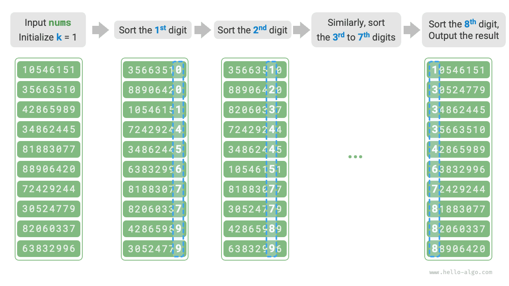

الترتيب
الترتيب الجذري
قدّم القسم السابق الترتيب بالعد، وهو مناسب عندما يكون عدد العناصر $n$ كبيراً بينما يكون نطاق القيم $m$ صغيراً. لنفترض أننا نحتاج إلى ترتيب $n = 10^6$ من أرقام الطلاب، حيث يتكوّن كل رقم منها من 8 خانات. عندئذ يكون نطاق القيم $m = 10^8$ كبيراً جداً. فاستخدام الترتيب بالعد سيتطلب كمية كبيرة من الذاكرة، بينما يتجنّب الترتيب الجذري هذه المشكلة.
الترتيب الجذري (radix sort) قائم على الفكرة الجوهرية نفسها التي يقوم عليها الترتيب بالعد: فهو أيضاً يرتّب عبر عدّ مرات الظهور. وبناءً على ذلك، يستغل الترتيب الجذري علاقة الخانات بعضها ببعض، ويرتّب خانة واحدة في كل مرة للحصول على النتيجة النهائية.
سير الخوارزمية
باتخاذ بيانات أرقام الطلاب مثالاً، لنفترض أن أقل خانة هي الخانة $1$ وأعلى خانة هي الخانة $8$. ويوضح الشكل أدناه سير الترتيب الجذري.
- هيّئ الخانة $k = 1$.
- نفّذ «الترتيب بالعد» على الخانة $k$ من أرقام الطلاب. وبعد اكتماله، ستكون البيانات مرتّبة من الأصغر إلى الأكبر وفقاً للخانة $k$.
- زد $k$ بمقدار $1$، ثم ارجع إلى الخطوة
2.وواصل التكرار حتى تُرتَّب جميع الخانات، وعندها تنتهي العملية.

لننظر الآن إلى الشيفرة. بالنسبة إلى عدد $x$ في الأساس $d$، يمكن الحصول على خانته $k$ ورمزها $x_k$ بالصيغة التالية:
$$ x_k = \lfloor\frac{x}{d^{k-1}}\rfloor \bmod d $$
هنا، يشير الرمز $\lfloor a \rfloor$ إلى تقريب العدد العشري العائم $a$ نحو الأسفل، ويشير $\bmod : d$ إلى أخذ الباقي بالقياس $d$. وبالنسبة إلى بيانات أرقام الطلاب، $d = 10$ و$k \in [1, 8]$.
وبالإضافة إلى ذلك، نحتاج إلى تعديل شيفرة الترتيب بالعد تعديلاً طفيفاً لتجعلها ترتّب استناداً إلى الخانة $k$ من العدد:
Go
/* الترتيب الجذري */
func radixSort(nums []int) {
// احصل على أكبر عنصر في المصفوفة، لتحديد الحد الأقصى لعدد الخانات
max := math.MinInt
for _, num := range nums {
if num > max {
max = num
}
}
// اجتز الخانات من الأقل إلى الأعلى
for exp := 1; max >= exp; exp *= 10 {
// نفّذ الترتيب بالعد على الخانة k من عناصر المصفوفة
// k = 1 -> exp = 1
// k = 2 -> exp = 10
// أي exp = 10^(k-1)
countingSortDigit(nums, exp)
}
}
TypeScript
/* الترتيب الجذري */
function radixSort(nums: number[]): void {
// احصل على أكبر عنصر في المصفوفة، لتحديد الحد الأقصى لعدد الخانات
let m: number = Math.max(... nums);
// اجتز الخانات من الأقل إلى الأعلى
for (let exp = 1; exp <= m; exp *= 10) {
// نفّذ الترتيب بالعد على الخانة k من عناصر المصفوفة
// k = 1 -> exp = 1
// k = 2 -> exp = 10
// أي exp = 10^(k-1)
countingSortDigit(nums, exp);
}
}
لماذا نبدأ الترتيب من أقل خانة؟
في جولات الترتيب المتعاقبة، تتجاوز الجولة اللاحقة نتيجة الجولة السابقة. فمثلاً، إذا أسفرت الجولة الأولى عن $a < b$ لكن أسفرت الجولة الثانية عن $a > b$، فإن نتيجة الجولة الثانية هي التي تسود. ولأن الخانات العليا ذات أولوية أعلى من الخانات الدنيا، ينبغي أن نرتّب الخانات الدنيا أولاً ثم الخانات العليا.
خصائص الخوارزمية
مقارنةً بالترتيب بالعد، يناسب الترتيب الجذري نطاقات قيم أكبر، لكنه لا يصلح إلا عندما يمكن تمثيل البيانات بعدد ثابت من الخانات ولا يكون عدد الخانات كبيراً جداً. فمثلاً، لا تناسب الأعداد العشرية العائمة الترتيب الجذري لأن عدد الخانات $k$ قد يكون كبيراً جداً، مما قد يؤدي إلى تعقيد زمني $O(nk) \gg O(n^2)$.
- التعقيد الزمني $O(nk)$، وترتيب غير تكيّفي (non-adaptive): ليكن عدد العناصر $n$، ولتُمثَّل القيم في الأساس $d$، وليكن الحد الأقصى لعدد الخانات $k$. يستغرق الترتيب بالعد لخانة واحدة زمن $O(n + d)$، لذا يستغرق ترتيب الخانات $k$ كلها زمن $O((n + d)k)$. ومن الناحية العملية، يكون $d$ و$k$ صغيرين نسبياً عادةً، لذا يقترب التعقيد الزمني الإجمالي من $O(n)$.
- التعقيد المكاني $O(n + d)$، وترتيب ليس في المكان (non-in-place): مثل الترتيب بالعد، يحتاج الترتيب الجذري إلى المصفوفتين المساعدتين
resوcounterبطولين $n$ و$d$. - ترتيب مستقر: عندما يكون الترتيب بالعد مستقراً، يكون الترتيب الجذري مستقراً أيضاً؛ وعندما يكون الترتيب بالعد غير مستقر، لا يستطيع الترتيب الجذري ضمان نتائج ترتيب صحيحة.